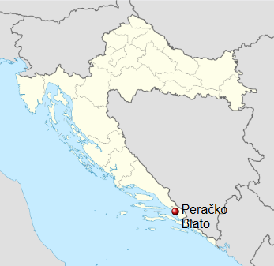

Dobro došli na stranicu Peračkog Blata! Ovdje možete saznati više o našem mistu, njegovim ljudima, običajima i zanimljivostima.

Peračko Blato nalazi se u Dalmaciji, u blizini grada Ploča, uz Baćinska jezera, na području doline Neretve.
Okruženo je plodnim poljima i prirodnim ljepotama koje ovom kraju daju poseban izgled.
Ime naselja potječe od starijeg zaseoka Perka, koji se u povijesnim zapisima spominje 1664. i 1666. godine. Naziv Perka povezuje se s imenom Perko, odnosno Petar. Sam naziv „Blato” povezan je s nekadašnjim močvarnim područjem i podzemnim vodama.
Velike promjene u krajoliku dogodile su se 1938. godine, kada je probijen tunel koji je omogućio otjecanje vode iz jezera prema moru. Time su se stvorili uvjeti za razvoj poljoprivrede, a posebno uzgoja smokava, po kojima je Peračko Blato danas poznato.
Peračko Blato tako spaja bogatu povijest, tradiciju, poljoprivredu i prirodne ljepote neretvanskog kraja. Klik Medija +1